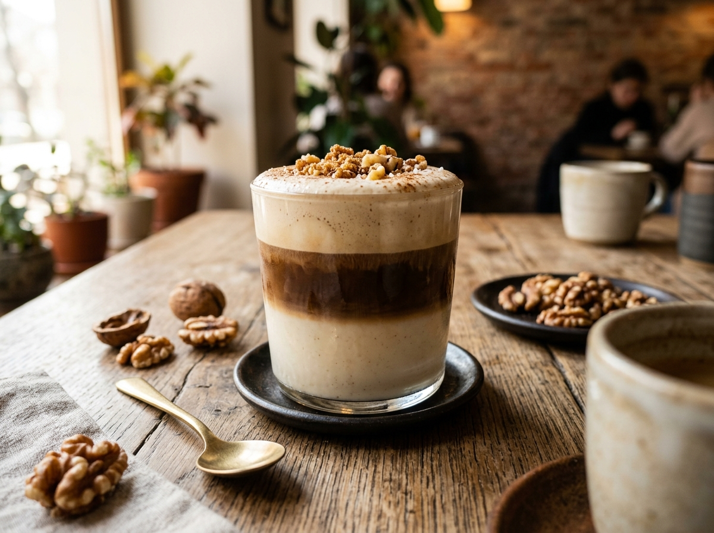
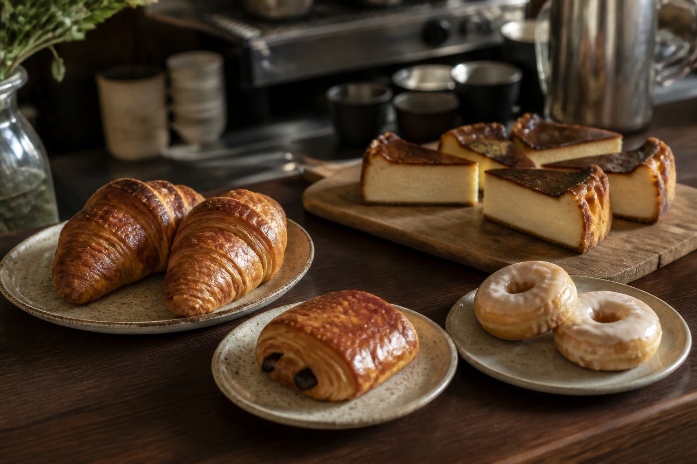
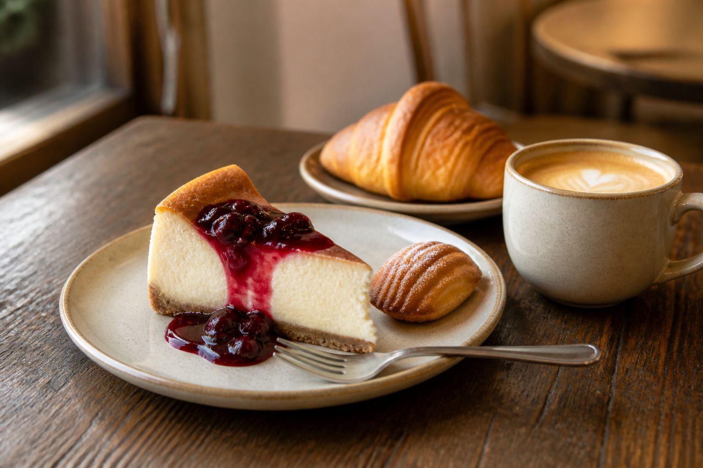
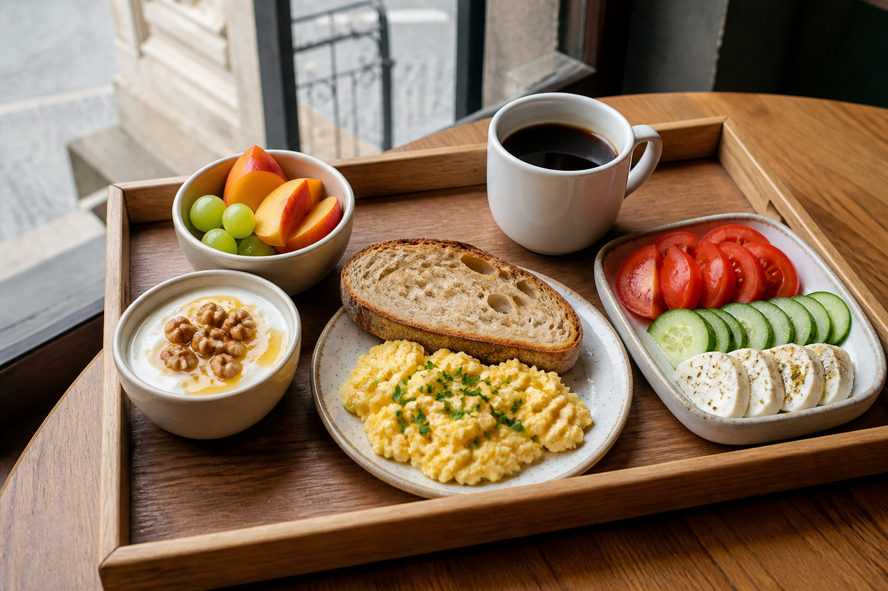

익숙한 커피, 분명한 가격
현지 고객이 바로 이해하는 커피를 기준으로 두고, 아이스 메뉴는 별도 가격으로 명확히 제시합니다.
ENVOY CAFÉ
Tbilisi Old Town
커피부터
현지에서 익숙하게 주문할 수 있는 커피에, 한국의 감각과 조지아의 재료를 한 잔씩 더합니다.
가격은 GEL 기준 예상 판매가입니다. 실제 원가와 공급 조건을 확인한 뒤 오픈 전 확정합니다.

BAM 공유용
엔보이 카페는 ‘음료를 많이 파는 곳’보다, 올드타운에서 머물고 다시 찾을 이유를 만드는 작은 거점이 되어야 합니다. 현지 매장을 방문하며 메뉴·카운터·테이크아웃·좌석 사용을 관찰했고, 그 인사이트를 초기 메뉴의 범위에 반영했습니다.
현지 고객이 바로 이해하는 커피를 기준으로 두고, 아이스 메뉴는 별도 가격으로 명확히 제시합니다.
현장에서는 페이스트리·샌드위치·음료가 한눈에 보이는 쇼케이스가 즉시 구매와 테이크아웃을 만듭니다. 그래서 베이커리와 출발 전 조식을 함께 둡니다.
서울·트빌리시·엔보이 라프는 각각 제공 온도를 명시하고, 한국의 감각과 조지아 재료를 한 잔에서 설명할 수 있게 합니다.
조식은 투숙객 서비스로 우선 운영하고, 브런치 4종은 제조 시간·재고·판매 흐름을 확인한 뒤 확정합니다.
넌커피
커피를 마시지 않는 고객도 한 번의 방문 안에서 선택할 수 있게, 따뜻한 메뉴와 차가운 메뉴를 같은 무게로 둡니다.
계절 주류
뱅쇼는 향신료와 감귤을 넣어 데운 와인이고, 상그리아는 과일을 넣어 차게 마시는 와인 칵테일입니다. 두 메뉴를 동시에 넓게 운영하지 않고, 계절과 판매 흐름에 따라 한 메뉴를 중심으로 준비합니다.
카운터 셀렉션
디저트는 손님이 음료 한 잔에 머무를 이유를 보태는 구성입니다. 당일 공급처와 판매량에 따라 품목을 정리합니다.


엔보이 투숙객
조식은 외부 유입을 전제로 하지 않습니다. 호스텔 고객의 아침 만족도와 카페의 첫 접점을 만드는 서비스로 운영합니다.

이른 투어와 체크아웃 고객을 위한 투숙객 전용 수령 메뉴입니다. 기존 조식·브런치 재료를 활용해 준비하며, 전날 22:00까지 또는 출발 30분 전 요청을 기준으로 운영합니다.
아래 4종은 오픈 후 확정을 위한 후보입니다. 레시피·제조 시간·재고·판매 흐름을 짧게 검증한 뒤 최종 메뉴로 확정합니다.
오픈 후
아래 메뉴는 초기 판매와 제조 데이터를 확인한 뒤 소수부터 시험할 후보입니다. 한 번에 늘리지 않습니다.
현장 관찰
메뉴·가격·카운터·공간 사용을 관찰하며 수집한 사진입니다. 개별 카페의 제품이나 브랜드를 그대로 적용한다는 뜻이 아니라, 엔보이의 메뉴와 공간을 판단하기 위한 현장 기록입니다.
음료부터 시작하는 이유
아메리카노, 라떼, 카푸치노와 같은 기본 메뉴는 현지 손님이 즉시 이해하고 가격을 비교할 수 있는 기준입니다.
서울 라떼와 트빌리시 라떼는 한국적 감각과 조지아의 꿀, 호두를 직접 경험하게 하는 작은 이유입니다.
초기 메뉴는 제조와 재고를 복잡하게 만들지 않는 범위에서 시작합니다. 판매를 보고 다음 메뉴를 더합니다.
음료 메뉴만으로 입지의 약점을 해결할 수는 없습니다. 메뉴는 첫 방문을 돕는 언어이고, 재방문은 공간과 관계가 만듭니다.
메뉴 밖의 과제
엔보이가 경쟁 카페와 달라지는 이유는 더 많은 음료가 아닙니다. 입지가 자동으로 손님을 데려오지 않는다면, 고객이 일부러 찾아오고 머물고 추천하게 만드는 공간의 이유를 만들어야 합니다.
모든 고객을 동시에 잡으려 하지 않고, 가장 먼저 관계를 만들 사람과 그들이 이곳에서 얻을 장면을 정해야 합니다.
음료가 아닌 반복되는 만남, 교류, 작은 프로그램, 편안한 작업과 대화 중 무엇이 엔보이의 리듬이 될지 선택해야 합니다.
국적 표기가 아니라 환대, 메뉴의 한 가지 터치, 큐레이션, 커뮤니케이션으로 고객이 실제로 느끼는 정체성이 되어야 합니다.
간판, 지도 정보, 호스텔의 안내, 주변 파트너와의 연결이 고객이 엔보이를 발견하고 언덕길을 선택하는 과정을 도와야 합니다.
외부 고객의 재방문, 시그니처 선택, 체류 방식, 프로그램 반응을 관찰하고, 잘되지 않는 가정은 빠르게 수정하는 운영 기준이 필요합니다.
메뉴는 답이 아니라, 엔보이가 말하기 시작하는 첫 번째 언어입니다.
조식은 숙소 고객을 위한 환대입니다. 외부 고객에게는 음료, 브런치, 그리고 그보다 더 중요한 공간의 이유를 함께 만들어 가야 합니다.